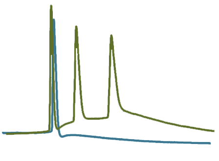
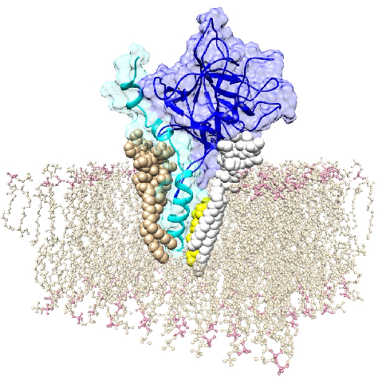
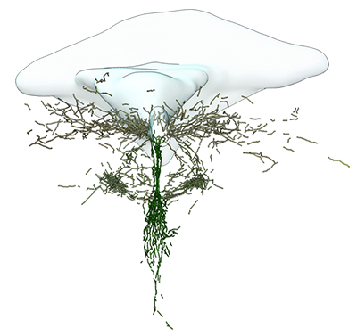

The lab
In our lab, we are interested in how neural circuits are built, regulated, and function across molecular, cellular, and systems levels. Our research integrates molecular biology, imaging, neuroanatomy, electrophysiology, and computational analysis to uncover how neurons communicate, adapt, and organize within the central nervous system.
Our lab employs a broad range of experimental tools, including electrophysiology, confocal and live-cell imaging, light-sheet microscopy, and electron microscopy. We routinely use viral vectors, optogenetics, primary neuronal cultures, and stereotactic approaches to target specific cell populations in both in vivo and in vitro preparations. These methods are complemented by quantitative image analysis, molecular modeling, and computational techniques that allow us to connect structural observations with functional mechanisms.
Across preparations, we are particularly interested in neuronal excitability, synaptic communication, and vesicle dynamics, as well as the principles that govern circuit organization and adaptability. We also investigate specialized cell types and their integration into broader neural networks, leveraging large-scale imaging and data-driven approaches to reveal patterns of connectivity and function within the spinal cord and brainstem. Our overarching goal is to bridge mechanisms across scales—from molecular signaling to circuit-level architecture—to better understand how neural systems maintain function, adapt to internal and external demands, and contribute to both healthy and pathological states.
Current Research Lines
LGI1 and neuronal excitability
LGI1 (Leucine-rich glioma-inactivated protein 1) is a secreted synaptic protein that plays a fundamental role in maintaining excitatory synapse stability and regulating neuronal excitability. By forming a trans-synaptic complex with its postsynaptic receptor ADAM22 and the presynaptic partner ADAM23, LGI1 orchestrates the proper alignment and function of glutamatergic synapses. This interaction is essential for fine-tuning voltage-gated potassium channel activity and trafficking, particularly Kv1 channels, which shape action potential firing.
Thus, LGI1 is critical to maintain balanced excitation and inhibition, and its disruption originates widespread neuronal hyperexcitability. Its pathological relevance is underscored by the fact that mutations in LGI1 cause autosomal dominant lateral temporal lobe epilepsy (ADLTE), while autoantibodies against LGI1 lead to limbic encephalitis, both conditions characterized by seizures and severe disturbances in cognition and network stability.
Altogether, LGI1 stands as a key molecular regulator linking synaptic structure, receptor dynamics, and ion channel modulation to the proper function of neural circuits.

BoNT/B, Synaptotagmins, and neuronal exocytosis
Our research explores Synaptotagmins 1 and 2, the main calcium sensors for fast synaptic vesicle release, focusing on their highly conserved extracellular domains that are also exploited by botulinum neurotoxin B to intoxicate neurons.
Despite these domains making neurons vulnerable to one of the most potent toxins known, they have remained virtually unchanged across evolution; a striking paradox that points to an essential, yet-to-be-discovered physiological function. By exploring the molecular determinants that allow BoNT/B binding, we aim to uncover a general role of the SYT extracellular domain in the synaptic vesicle cycle, potentially revealing how these proteins contribute to vesicle dynamics, identity, and the fidelity of neurotransmission.
Combining structural, biochemical, functional, and bioinformatics approaches, this work seeks to decipher the principles underlying vesicle reuse and synaptic precision, linking fundamental physiology to evolutionary constraints and vulnerability to toxins.

Cerebrospinal fluid-contacting Neurons (CSF-cNs)
Cerebrospinal fluid–contacting neurons (CSF-cNs) express the polymodal sensory channel PKD2L1 and detect mechanical and chemical changes within the cerebrospinal fluid. Their intrinsic sensory activity supports the view that CSF-cNs are genuine sensory neurons embedded within the central nervous system.
At the spinal level, CSF-cNs modulate segment-specific motor circuits. Work in zebrafish and mammals shows that they influence locomotion, posture, and skilled motor behaviors through defined connections with interneurons and motor neurons, positioning them as key modulators of spinal motor output.
Importantly, CSF-cNs also project to supraspinal centers involved in autonomic and interoceptive control, including the NTS and the DMNX. Together with their sensory properties, these connections support the hypothesis that CSF-cNs form a central interoceptive system linking cerebrospinal fluid signals to autonomic regulation, motor control, and adaptive behavior. Defining the connectivity of CSF-cNs across the neuraxis is therefore essential to understand how internal physiological states are integrated within the CNS.

News & Updates
13/10/2025 The Lipid Brain Atlas is out! Researchers at the EPFL have revealed that lipids act as anatomical zip codes, uncovering lipid-defined brain territories (“Lipizones”) and unprecedented metabolic and cellular organization across the mouse brain. Check the preprint and explore the Lipizones Atlas!
15/08/2025 We made the cover of Communications Biology! First whole anatomical and electrophysiological characterization of the mammalian system of CSF-cNs performed at the Wanaverbecq's Lab. Check the paper and take a look at the cover in 3D.
- Date — And more…
Team & Collaborators
Name 1
Role / short bio.
Name 2
Role / short bio.